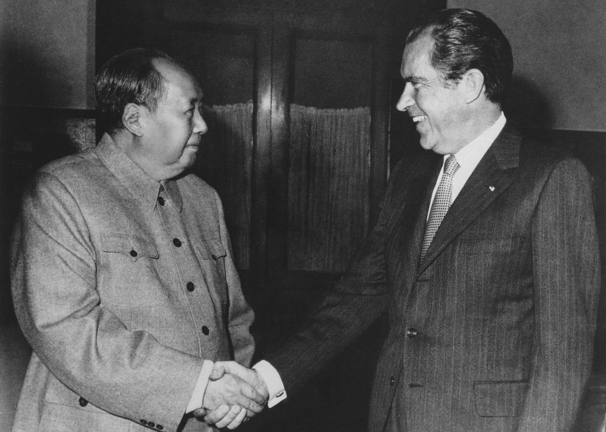

U.S. FOREIGN POLICY / WEEK 11
Negotiating with rivals in the 1970s
- 1969–1976
- Dr. Murat Toman
U.S. FOREIGN POLICY / WEEK 11
The main idea
- Détente aimed to manage competition and reduce some risks. The United States negotiated with the Soviet Union and opened relations with China while facing war fatigue and limits on presidential power.
- Talks may depend on military pressure, economic interests, or reassurance. Soft power concerns attraction and legitimacy. To evaluate détente, ask what changed, how it changed, and for whom. Avoid judging a decision only by outcomes that its makers could not yet know.
U.S. FOREIGN POLICY / WEEK 11
Where this week fits in history
| When | Selected event |
|---|---|
| 1964 | Tonkin Gulf Resolution |
| 1972 | Shanghai Communiqué |
| 1987 | INF Treaty |
U.S. FOREIGN POLICY / WEEK 11
History through a source

- Nixon’s meeting with Mao in Beijing in 1972 made the opening to China publicly visible. The United States and China could cooperate on shared interests while continuing to disagree on important issues.
- A photograph records a meeting and a public gesture. It cannot by itself show the terms agreed or the intentions of each participant.
U.S. FOREIGN POLICY / WEEK 11
Key words explained
- Détente: An easing of tensions between rivals.
- Triangular diplomacy: Diplomacy involving the relationships among three major actors, here the United States, China, and the Soviet Union.
U.S. FOREIGN POLICY / WEEK 11
Key words explained
- Communiqué: A public statement issued after diplomatic discussions.
- Ambiguity: Wording that leaves more than one interpretation possible.
U.S. FOREIGN POLICY / WEEK 11
Détente managed rivalry
- Détente means an easing of tensions. It did not end disagreement between the United States and its rivals.
- Negotiation offered ways to manage risks and commitments when resources and public support were under pressure. Cooperation on one issue could coexist with conflict on another.
U.S. FOREIGN POLICY / WEEK 11
Domestic trust affected foreign commitments
- Vietnam and Watergate damaged trust in executive claims. Congress and public opinion influenced what leaders could promise and sustain.
- Secret diplomacy might create room for negotiation while raising concerns about accountability. A commitment abroad still depended on authority and support at home.
U.S. FOREIGN POLICY / WEEK 11
China and the Soviet Union had their own interests
- Triangular diplomacy involved relationships among the United States, China, and the Soviet Union. Each government pursued its own goals and watched the others’ relations.
- None simply served as a passive tool of another. Other countries and communities also experienced the effects of these negotiations.
U.S. FOREIGN POLICY / WEEK 11
Diplomatic wording can preserve disagreement
- The Shanghai Communiqué illustrates the importance of distinguishing an agreement from an acknowledgment of someone else’s position.
- Deliberately careful wording can make cooperation possible without resolving every dispute. The Helsinki process also connected diplomacy with human-rights commitments that actors outside government could later use.
U.S. FOREIGN POLICY / WEEK 11
Negotiation is a method, not automatically soft power
- Talks may depend on military pressure, economic interests, or reassurance. Soft power concerns attraction and legitimacy.
- To evaluate détente, ask what changed, how it changed, and for whom. Avoid judging a decision only by outcomes that its makers could not yet know.
U.S. FOREIGN POLICY / WEEK 11
Politics at home and abroad
- At home: War fatigue, economic problems, Watergate, and Congress constrained presidential choices.
- Abroad: The United States sought to manage competition through negotiation and changing relationships.
- The connection: domestic support and resources affect what leaders can promise abroad. International events can change domestic priorities.
U.S. FOREIGN POLICY / WEEK 11
How power worked
| Form of influence | How it operated in this week |
|---|---|
| Hard power | Military capabilities and ongoing coercion formed part of the bargaining context. |
| Soft power | Reassurance and credible commitments could improve relationships, while negotiation itself did not prove attraction. |
- Negotiation is a method, not inherently soft power; its leverage may rest on military or economic pressure.
U.S. FOREIGN POLICY / WEEK 11
A worked explanation
- Does negotiating with a rival mean accepting its political system?
- No. Governments can reach limited agreements while continuing to disagree about values, interests, and other conflicts.
- Why this matters: Talks may depend on military pressure, economic interests, or reassurance. Soft power concerns attraction and legitimacy. To evaluate détente, ask what changed, how it changed, and for whom. Avoid judging a decision only by outcomes that its makers could not yet know.
U.S. FOREIGN POLICY / WEEK 11
Practice with the documents
- Find a shared statement in the Shanghai Communiqué.
- Find wording that describes one party’s position rather than a common agreement.
- Explain how those two forms of language allow cooperation while preserving disagreement.
U.S. FOREIGN POLICY / WEEK 11
How to support an answer
- A claim is what you argue. Evidence is a specific passage, event, or finding that supports it. Explain the connection between them.
- Example structure: “The document claims ____. This suggests ____. It cannot by itself show ____.”
- A speech can establish what a speaker said. Evidence of actions and consequences is needed to judge whether the policy worked.
U.S. FOREIGN POLICY / WEEK 11
What to remember
- Détente managed competition rather than eliminating it.
- Domestic authorization affects international credibility and durability.
- Diplomatic ambiguity can enable agreement while relocating risk.
- Negotiation may rely on hard power; attraction is a distinct mechanism.
U.S. FOREIGN POLICY / WEEK 11
Reading guide
- Shanghai Communiqué (1972), FRUS document 203 A document from the period. Use it to identify what officials claimed or authorized, then check other evidence for the consequences. External source page; access may vary.
- Ford’s Helsinki Address (1975), FRUS document 62 A document from the period. Use it to identify what officials claimed or authorized, then check other evidence for the consequences. External source page; access may vary.
Shanghai Communiqué (1972), FRUS document 203 — External source page; access may vary.
Ford’s Helsinki Address (1975), FRUS document 62 — External source page; access may vary.
U.S. FOREIGN POLICY / WEEK 11
Reading guide
- Rapprochement with China, 1972 A retired historical background essay. Use it for context, and compare its account with scholarship and other perspectives. External source page; access may vary.
- From Colony to Superpower: U.S. Foreign Relations since 1776 A scholarly narrative companion for historical periods. Select the relevant period; no unverified page assignments are supplied. Publisher record; full text may require institutional access.
Rapprochement with China, 1972 — External source page; access may vary.
Office of the Historian Milestones: retired series, retained online for historical reference; not a current-policy source.
From Colony to Superpower: U.S. Foreign Relations since 1776 — Publisher record; full text may require institutional access.
U.S. FOREIGN POLICY / WEEK 11
Reading guide
- The Global Cold War: Third World Interventions and the Making of Our Times Adds a global and intervention-centered perspective to Cold War analysis. Publisher record; full text may require institutional access.
The Global Cold War: Third World Interventions and the Making of Our Times — Publisher record; full text may require institutional access.
U.S. FOREIGN POLICY / WEEK 11
Video and audio guide
- Assignment: China - The Week that Changed the World Study the interaction between diplomacy, television coverage, and public perceptions during Nixon’s China visit.
- August 1, 1975: Remarks in Helsinki Assess how Ford presented cooperation, security, and human rights at Helsinki.
Assignment: China - The Week that Changed the World — Free provider page; external player may require consent or be region-dependent
January 31, 2012; documentary with interviews and archival footage; institutional page links its YouTube version.
August 1, 1975: Remarks in Helsinki — Free provider page; external player may require consent or be region-dependent
Primary-source audio, video, and transcript. Replaced the Ford Library guide because its linked audio points to a QA hostname.
U.S. FOREIGN POLICY / WEEK 11
Using the sources carefully
- Linked readings and media offer particular viewpoints. Compare them with the lesson and other evidence. Some sources require institutional access.
- Media links and descriptions were checked when the course resources were prepared. Full playback was not tested.